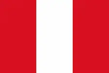

Darius C. Arocutipa Q.
About Me
My name is Darius Arocutipa. I was born in Arequipa Peru in an small pier town called Matarani. Even though I've been able to visit other places, this small town is what I call home. Right now I'm pursuing a Degree in Software Development. I've loved programming and is something I'm motivated to keep learning.
Arequipa, Peru

Official Flag of PeruPeru is the 3rd largest country in South America and is located on the western coast of the continent next the Pacific Ocean. It's one of the world's top megadiverse nations, having a massive percentage of the planet's diverse ecosystems across its coast, high Andes, and vast Amazon. The country is best known for Machu Picchu, its ancient Incan history and its world-renowned gastronomy.